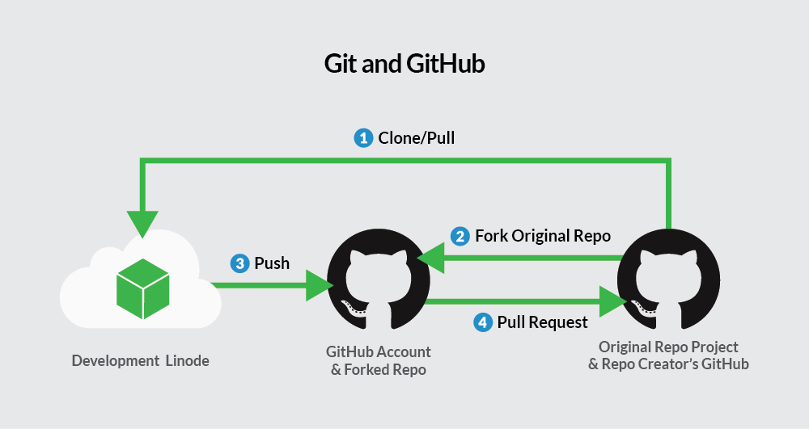

VCS (Version Control System) By: Nate D.

Image Link
compsci@compsci-VBox:~$ sudo apt update
compsci@compsci-VBox:~$ sudo apt install git
compsci@compsci-VBox:~$ git --version
compsci@compsci-VBox:~$ git config --global user.name "DogNate"
compsci@compsci-VBox:~$ git config --global user.email "blacktagbuilder@gmail.com"
compsci@compsci-VBox:~$ git config --list
user.name=DogNate
user.email=blacktagbuilder@gmail.com
compsci@compsci-VBox:/var/www/html/nated/.git$ git init
compsci@compsci-VBox:~$ git config --help
compsci@compsci-VBox:/var/www/html/nated/Projects/vcs$ rm -rf .git
compsci@compsci-VBox:/var/www/html/nated/Projects/vcs$ git status
compsci@compsci-VBox:/var/www/html/nated/Projects/vcs$ git log
compsci@compsci-VBox:/var/www/html/nated/Projects/vcs$ git diff
compsci@compsci-VBox:/var/www/html/nated/Projects/vcs$ git add -A
compsci@compsci-VBox:/var/www/html/nated/Projects/vcs$ git commit -m "Added date"
compsci@compsci-VBox:/var/www/html/nated/Projects/vcs/GitHubClones/mrm$ git clone https://github.com/CHS-McClendon/VCS_mrm.git .
Cloning into '.'...
remote: Enumerating objects: 11, done.
remote: Counting objects: 100% (11/11), done.
remote: Compressing objects: 100% (6/6), done.
remote: Total 11 (delta 0), reused 0 (delta 0), pack-reused 0
Unpacking objects: 100% (11/11), done.
compsci@compsci-VBox:/var/www/html/nated/Projects/vcs$ rm -rf GitHubClones/
compsci@compsci-VBox:/var/www/html/nated/Projects/vcs$ mkdir GitHubClones
compsci@compsci-VBox:/var/www/html/nated/Projects/vcs/GitHubClones$ mkdir mrm
Today is Thursday 23 May